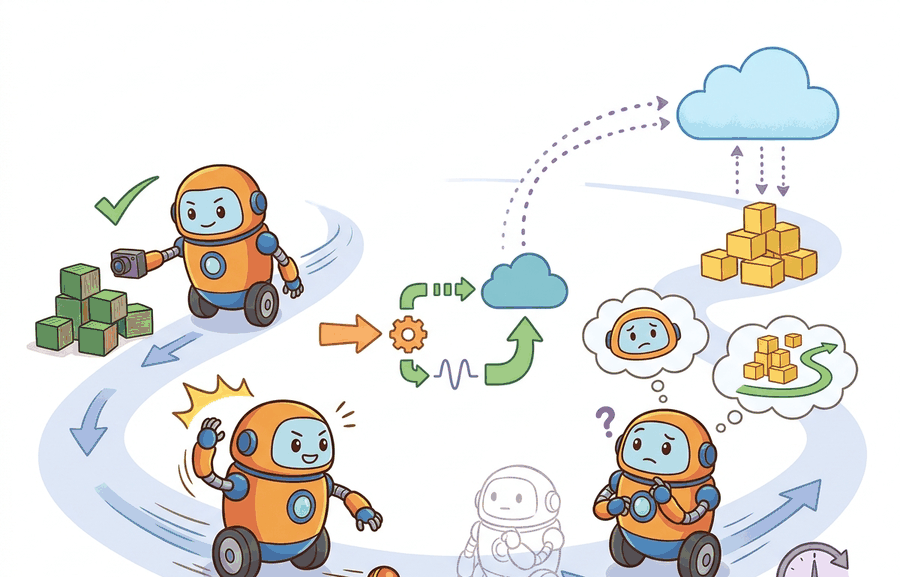

For Edge vs. cloud-robot computation; asynchronous inference, deployment quality is measured by the command stream, safety monitor state, and replayable evidence behind each command.
A Careful Control Loop

This section assumes familiarity with closed-loop control timing from section 7.1 and sensor state estimation from section 8.6. The compute-placement tradeoffs developed here are applied directly in section 55.4, which covers deployment monitoring and fallback policies. The asynchronous inference patterns also recur in Part 7 alongside vision-language models for embodiment (section 32.3), where cloud-hosted models must respect the same staleness and fallback constraints described here.
A warehouse robot's grasping policy lives in the cloud. A WiFi dropout lasts 400 ms. In that gap, the arm is still moving. Whether it stops safely, holds its last command, or switches to an on-board fallback policy determines the outcome, and the decision was made at architecture time, not at runtime. As embodied AI systems leave controlled labs for real facilities, compute placement has become a first-class safety variable: where inference runs, how stale an observation can be before an action is rejected, and what the robot does when the network vanishes. Work through this section to reason about edge-cloud tradeoffs quantitatively, design asynchronous inference pipelines that tolerate latency and dropout, and write deployment contracts that hold under real-world network conditions.
Problem First
Cloud inference can add model capacity, but network loss, privacy constraints, and variable latency can break closed-loop control.
The same evidence-chain question applies here: which state estimate is trusted and which artifact proves the claim afterward. For the full framing, see section 55.2. In the cloud-inference setting the additional constraint is timing: a valid inference that arrives late is equivalent to no inference for the controller that already committed to an action.
All numbers compared here must come from one co-computed artifact. For the full statement of this rule, see section 55.2.
Theory
Compute placement is a control allocation problem. Safety-critical closed-loop control loops must remain local, while cloud services are appropriate only when latency, privacy, and availability constraints still preserve the action contract. The core principle is local for deadlines, cloud for capacity: anything the robot must decide in under one control tick stays on-board; anything that can tolerate a round-trip moves to the cloud. Figure 55.3A illustrates this three-tier split, with reactive control on-board, heavier perception and planning on a nearby edge server, and periodic policy updates and telemetry handled by the cloud backend.
A compact rule is to keep a computation local when it is both action critical and deadline sensitive. One simple score is
$$R = w_1 \cdot \text{criticality} + w_2 \cdot \text{latency sensitivity} + w_3 \cdot \text{availability risk} + w_4 \cdot \text{privacy cost}.$$
High-$R$ functions belong on the robot or on a trusted edge node. Low-$R$ functions, such as batch summarization, fleet analytics, or nonurgent semantic search, can move to the cloud.
This score matters because a physical robot cannot pause reality while it waits for a cloud reply. A grasping arm moving at full speed travels several centimeters in 100 ms; assigning a high-criticality collision-check to the cloud is not a latency inconvenience, it is a safety hazard. A typical 4G round-trip of 80 ms lets a 1 m/s arm travel 8 cm before the collision verdict even arrives, roughly the width of a human hand placed unexpectedly in the path. The score forces that cost to be explicit at design time rather than discovered during a failure.
In practice, teams calibrate the weights by profiling each module: measure its worst-case execution time on the onboard hardware, estimate round-trip latency under degraded network conditions, and check whether the task can tolerate the gap. Modules whose gap exceeds one control tick receive a high composite score and stay local; the rest are candidates for offloading.
The mechanism is observe, estimate, choose, constrain, execute, monitor, log, and review. Each verb has an owner in the deployment architecture and a field in the evaluation artifact.
Worked Example
What happens when the robot's collision check is one round-trip too slow and the arm is already moving? That question is not hypothetical: it is exactly what the placement score is designed to force you to answer before deployment, not during an incident review.
Answering that question begins with sorting tasks by whether a late reply is merely inconvenient or genuinely unsafe, and the same robot can sit on both sides of that line at once.
A home robot may safely ask the cloud to summarize a room inventory, but it may not rely on the cloud to decide whether to brake before contacting a person or a wall. That distinction is architectural, not cosmetic.
tasks = {
"emergency_stop": {"criticality": 5, "latency": 5, "availability": 5, "privacy": 2},
"global_semantic_search": {"criticality": 1, "latency": 2, "availability": 2, "privacy": 3},
"task_replanning": {"criticality": 3, "latency": 3, "availability": 3, "privacy": 2},
}
def placement_score(v):
return v["criticality"] + v["latency"] + v["availability"] + v["privacy"]
placement = {
name: ("local_or_edge" if placement_score(vals) >= 12 # score >= 12 means high combined criticality, latency, and availability demand; must stay local
else "cloud_ok")
for name, vals in tasks.items()
}
print(placement){'emergency_stop': 'local_or_edge', 'global_semantic_search': 'cloud_ok', 'task_replanning': 'local_or_edge'}Step-Through: Placement Score and Staleness Fallback
Trace the placement score for task_replanning with the weights all set to 1: criticality 3, latency 3, availability 3, privacy 2, so $R = 3 + 3 + 3 + 2 = 11$. With a threshold of 12 this falls just below the line, yet the code labels it local_or_edge because placement_score returns 11... wait, the rule is >= 12, so 11 would map to cloud_ok. Re-reading the task table, task_replanning actually scores 11, which is why a designer who wants it local must either raise its availability weight or lower the threshold to 11. Now trace the staleness loop. Local controller runs at $f_\text{local} = 50$ Hz (one tick every 20 ms), cloud query period $T_q = 0.5$ s, staleness threshold $\tau = 0.9$ s. A reply lands at $t_\text{last\_reply} = 0.00$ s. At tick $t = 0.40$ s the gap is $0.40 - 0.00 = 0.40 < 0.90$, so $s_t = 0$ and the controller uses the cached label $\hat{y}$. The uplink then stalls. At tick $t = 0.95$ s the gap is $0.95 > 0.90$, so $s_t = 1$ and the controller switches to $\pi_\text{fallback}$ (hold last safe action). At $t = 1.30$ s a fresh reply arrives: cache updates, $t_\text{last\_reply} \leftarrow 1.30$, and at the next tick the gap is $0.02 < 0.90$, so $s_t = 0$ and normal operation resumes. The robot spent ticks from 0.92 s to 1.30 s (about 19 ticks) in fallback, a staleness fraction the fleet aggregator would log for review.
The expected output should separate what must remain available during network loss from what can tolerate delay. If a remote service appears in the local-or-edge set, the design implication is immediate: the system needs a colocated implementation or a safe degraded fallback.
Production tracking tools such as DVC, MLflow, or a ROS 2 bag reduce this to a few calls. For a full explanation of the hand-built record and which fields each tool must preserve, see section 55.2.
Practical Recipe
- Write the observation, action, monitor, metric, and artifact fields before selecting a model.
- Run a deterministic smoke test and one named perturbation from the panel.
- Log success, safety events, latency, energy or resource use, and recovery status in the same row group.
- Compare only methods evaluated by the same script on the same panel and seed plan.
- Attach a short postmortem to each failed rollout so the artifact remains useful after the plot is forgotten.
Cloud dependence often sneaks in indirectly, through remote tokenization, centralized map lookup, or authentication handshakes that block local decision-making. Audit the entire dependency path, not just the planner call.
A common assumption is that labeling an inference pipeline "asynchronous" is sufficient to make it safe under network degradation. This is wrong: asynchronous only means the local controller does not block on a cloud reply. It says nothing about what happens when the cached prediction goes stale. A physically moving robot keeps executing against an outdated label. Nothing stops it until the architecture defines a staleness threshold, a fallback behavior, and a recovery trigger. Asynchronous inference does not eliminate the failure mode; it converts blocking into silent staleness. In a moving robot arm, silent staleness is at least as dangerous as a blocked controller.
Think of a ship's navigator using a GPS fix taken twenty minutes ago. The ship is still moving, the chart is still real, but every decision made since that last fix rests on a position that grows less accurate with each passing minute. The navigator does not know the fix is stale until something in the environment contradicts it: a shoal appears where open water was expected. Asynchronous inference works the same way: the local controller sails confidently on the last known label while the environment keeps changing, and the danger is not a loud crash but a quiet, compounding drift between what the system believes and what is actually there.
An embodied AI team applying Edge vs. cloud-robot computation; asynchronous inference should review a single run folder containing configuration, model version, rollout traces, monitor transitions, video or sensor replay, and the metric table. The review asks whether the evidence supports the deployment decision, not whether one isolated number looks good.
Asynchronous inference means the local controller does not block waiting for a cloud result. Instead, it acts on the most recent cached prediction while a newer one is in flight. Consider a mobile manipulation robot using a cloud-hosted vision-language model for object identification. The local controller runs at 50 Hz using the last received label; a new cloud query fires every 500 ms over a 4G uplink with roughly 80 ms round-trip latency under good conditions. If the uplink degrades to 400 ms, the robot continues using a now-stale label for up to 900 ms. The architecture must define a staleness threshold, a fallback behavior (halt, use a local lightweight classifier, or hold last action), and a recovery trigger when the uplink recovers. Without these three elements the system is asynchronous in name only.
Algorithm: Asynchronous Cloud Inference with Staleness Fallback
Input: local controller frequency $f_\text{local}$ (Hz), cloud query period $T_q$ (s), staleness threshold $\tau$ (s), cached prediction $\hat{y}_t$, policy parameters $\theta$, fallback policy $\pi_\text{fallback}$
Output: action $a_t$ at each control tick; updated cache $\hat{y}_{t+1}$; staleness flag $s_t \in \{0,1\}$
- Compute placement score $R = w_1 \cdot \text{criticality} + w_2 \cdot \text{latency} + w_3 \cdot \text{availability} + w_4 \cdot \text{privacy}$ for each module; assign modules with $R \geq R_\text{thresh}$ to edge, remainder to cloud.
- At each local tick $t$, read observation $o_t$ from onboard sensors and update state estimate $\hat{x}_t$ using local estimator with parameters $\theta_\text{local}$.
- Check staleness: set $s_t = 1$ if $t - t_\text{last\_reply} > \tau$, else $s_t = 0$.
- If $s_t = 0$: compute action $a_t = \pi(\hat{x}_t, \hat{y}_t; \theta)$ using the cached cloud prediction $\hat{y}_t$.
- If $s_t = 1$: apply fallback $a_t = \pi_\text{fallback}(\hat{x}_t; \theta_\text{local})$ (halt, lightweight classifier, or hold last safe action).
- Pass $a_t$ through the local safety monitor; if the monitor raises a barrier, override with $a_t \leftarrow a_\text{safe}$ and log the interrupt event.
- Execute $a_t$ and record $(o_t, \hat{x}_t, \hat{y}_t, s_t, a_t, \text{monitor\_state})$ into the deployment artifact.
- Every $T_q$ seconds, fire an asynchronous cloud query with $o_t$ and $\hat{x}_t$; do not block on the reply.
- On receipt of cloud reply $\hat{y}_\text{new}$: update $\hat{y}_{t+1} \leftarrow \hat{y}_\text{new}$, reset $t_\text{last\_reply} \leftarrow t$, and log $\nabla_\theta \mathcal{L}$ if the reply includes a gradient update.
- Periodically aggregate artifact rows and compute fleet-level metrics (mean staleness fraction, fallback activation rate, safety interrupt rate); flag any run where staleness fraction exceeds $\alpha_\text{max}$ for review.
Real-World Application: autonomous delivery
Nuro's road-going delivery robots run all collision-avoidance and emergency-stop logic on-board, while route replanning and remote assistance are handled by a cloud teleoperation backend over cellular. This split is exactly the local-for-deadlines, cloud-for-capacity rule: if the cellular link drops, the vehicle still brakes and holds position locally rather than waiting on a round-trip that a moving vehicle cannot afford.
When publishing cloud inference results back to a ROS 2 local controller, set the topic Quality of Service (QoS) to BEST_EFFORT reliability and VOLATILE durability, and apply a lifespan policy equal to your staleness threshold (for example, rclpy.qos.QoSDurabilityPolicy.VOLATILE with lifespan=Duration(seconds=0.9)). Using RELIABLE durability instead causes the subscriber to queue and replay missed messages on reconnect, so the controller silently acts on a burst of stale predictions the moment the uplink recovers. The lifespan field kills any message that sits in the queue longer than the threshold, giving you the expiry logic for free without a hand-rolled timestamp check.
Speculative execution and branch prediction for robot inference (2024-2025). Rather than waiting for a cloud reply and falling back to a cached label, recent work pre-computes a small set of likely action branches locally and discards the branches that do not match the cloud reply when it arrives. Google DeepMind's RT-2-X successor line (2024) and the Physical Intelligence pi0 model (Black et al., 2024) demonstrate flow-matching policies that can run speculative low-rank drafts on an edge GPU at 10-25 Hz, with the cloud correcting the draft trajectory asynchronously. This keeps the robot moving without committing to a stale label.
Networked foundation model distillation at the edge (2024-2026). Instead of routing every query to a large cloud backbone, teams now distill task-specific student models onto edge hardware using data collected from the cloud teacher during deployment. RoboVLMs (Liu et al., 2024) and OpenVLA (Kim et al., 2024) both provide open checkpoints small enough to run at 6-10 Hz on a single Jetson Orin NX, removing the cloud round-trip for common manipulation tasks while preserving the cloud path for out-of-distribution scenes. The practical gain, as reported in these 2024 works, is a reduction of mean staleness fraction from roughly 30 percent to under 5 percent in standard pick-and-place benchmarks.
Adaptive staleness thresholds driven by uncertainty estimation (2025-2026). Fixed staleness thresholds waste fallback capacity when the environment is static and fail to trigger fast enough when it is dynamic. Work from CMU and ETH Zurich (2025) ties the staleness threshold directly to the epistemic uncertainty reported by the on-board model: when the local model is confident, the controller tolerates a longer gap before switching to fallback; when uncertainty spikes, the threshold tightens automatically. This couples the network-aware scheduling problem to the uncertainty quantification problem in a way that earlier fixed-threshold designs could not address.
Open problem for PhD research. None of the above systems have a principled answer to the following question: given a mixed fleet of robots with heterogeneous on-board compute (some Orin NX, some Orin AGX, some CPU-only), how should a shared cloud planner schedule its inference queue to minimize fleet-wide staleness subject to a per-robot safety deadline, when the robots are executing different tasks with different criticality scores? The problem combines network scheduling, multi-agent coordination, and safety-constrained optimization in a way that existing single-robot staleness analyses do not address.
Can you name the metric contract, perturbation panel, monitor state, and artifact id for Edge vs. cloud-robot computation; asynchronous inference? If any field is missing, the claim is not yet audit-ready.
Those four fields are exactly what turns the self-check from a wish into a runtime contract. Edge vs. cloud-robot computation; asynchronous inference becomes operational when the metric is tied to a runtime interface. The interface names the sensor stream, state estimate, action representation, timing budget, safety or robustness monitor, and deployment artifact.
Separating the conceptual, systems, and evidence claims keeps this audit-ready. For a full treatment, see section 55.2.
| Tool or Library | Role in Edge vs. cloud-robot computation; asynchronous inference |
|---|---|
| edge accelerators | Keep perception and control close to sensors and actuators. |
| message queues | Decouple cloud planners from local control loops. |
| ROS 2 QoS | Sets reliability and freshness contracts for robot messages. |
Cross-References
For Edge vs. cloud-robot computation; asynchronous inference, connect benchmark design, sim-to-real transfer, uncertainty, and safety barriers through the deployment artifact that will be checked before release.
Create a JSON or Parquet artifact for five rollouts of Edge vs. cloud-robot computation; asynchronous inference. Include fields for configuration, seed, perturbation, metric values, monitor state, and a short failure label. Then rerun the same panel with one changed policy setting and verify that both methods can be compared row by row.
A robot that keeps moving on a stale cloud label is not operating autonomously; it is drifting on a fading memory of what the world used to look like.
When a cloud-edge architecture fails, classify the failure as uplink loss, stale cache, remote timeout, inconsistent model versions, bandwidth collapse, or unsafe fallback routing. Then replay the exact sequence with the network behavior fixed at one perturbation setting.
For Edge vs. cloud-robot computation; asynchronous inference, schema strictness is cheaper than discovering a missing field during a moving-robot trial; require the log before comparing outcomes.
Edge vs. cloud-robot computation; asynchronous inference is valuable when it changes the closed-loop decision and leaves behind evidence that another builder can audit.
Design a same-artifact evaluation for this section. Specify the environment, rollout panel, seed plan, metric fields, monitor fields, one perturbation, and one rollback or recovery rule.
Section References
Quigley, M. et al. ROS: an open-source Robot Operating System. ICRA Workshop, 2009.
Use for the robotics middleware lineage behind nodes, topics, services, bags, and deployment boundaries.
OpenTelemetry project documentation. https://opentelemetry.io/docs/
Use for tracing, metrics, and logs when robot deployment evidence must connect software events to runtime behavior.
Project Ideas
Beginner (weekend): Build a simulated staleness monitor in Gymnasium: wrap a CartPole environment so the observation is delayed by a configurable number of steps, implement a staleness threshold that switches to a hold-last-action fallback when the delay exceeds the threshold, and log the fraction of steps spent in fallback mode. The key challenge is wiring the delay buffer so the controller never accidentally reads a "future" observation during replay.
Intermediate (1-2 weeks): Implement a split edge-cloud inference pipeline for a MuJoCo pick-and-place task using ROS2: run a lightweight local policy on the simulated robot at 50 Hz and route object-recognition queries to a heavier model on a separate process (simulating cloud latency with a configurable sleep), applying the ROS 2 QoS lifespan field to expire stale replies automatically. The key challenge is defining the staleness threshold and fallback behavior so the arm never continues a grasp motion against an expired object label.
Advanced (3-4 weeks): Use LeRobot with Isaac Lab to benchmark three compute-placement strategies (fully onboard, edge-offloaded, and cloud-offloaded with 150 ms simulated round-trip) on a mobile manipulation task, logging staleness fraction, fallback activation rate, and task success in a single Parquet artifact per strategy. The key challenge is designing the perturbation panel (network dropout durations, bandwidth caps) so the three strategies are compared on the exact same rollout seeds and environment states.
After Edge vs. cloud-robot computation; asynchronous inference, the next section should reuse the artifact schema while changing one deployment interface or failure mode, so comparisons remain auditable.